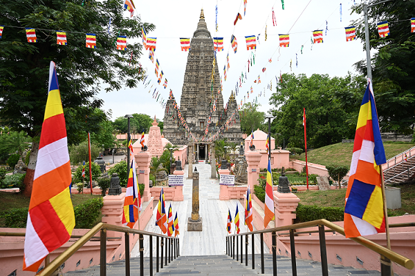
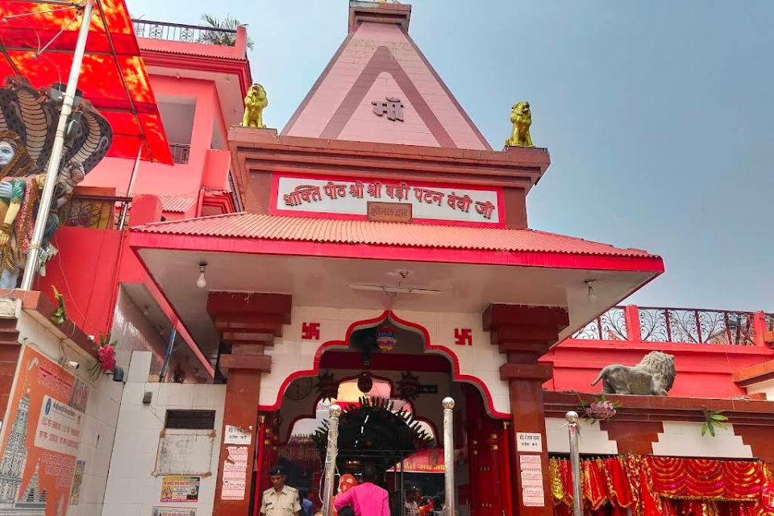
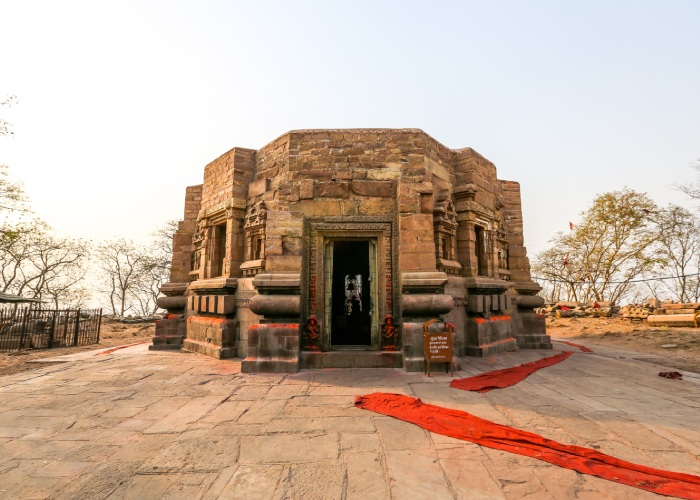
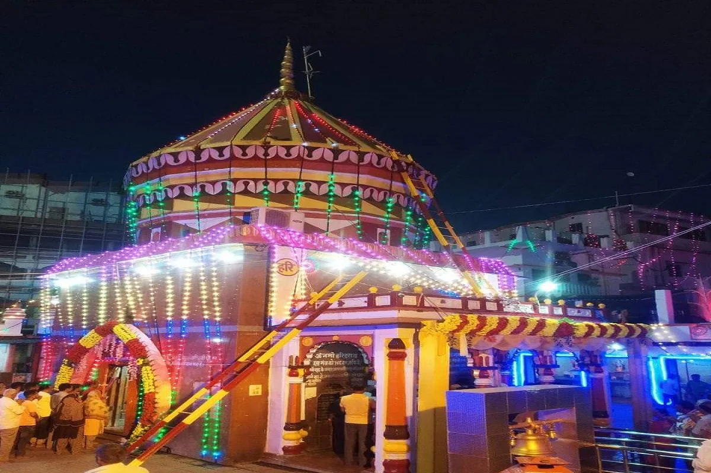

Temples and piligrimages in Bihar
Mahabodhi Temple, Bodh Gaya

The Mahabodhi Temple in Bodh Gaya is one of the most important Buddhist pilgrimage sites in the world. It is the place where Gautama Buddha attained enlightenment under the Bodhi Tree.
- Key Aspects of Mahabodhi Temple:
- Religious Significance: UNESCO World Heritage Site.
- Importance: Place of Buddha’s enlightenment.
- Location: Bodh Gaya, Bihar.
- Best Time to Visit: October to March.
- Click here for more information.
Vishnupad Temple, Gaya

Vishnupad Temple in Gaya is a sacred Hindu temple dedicated to Lord Vishnu. It is believed to have the footprint of Lord Vishnu imprinted on a rock.
- Key Details:
- Religious Importance: Associated with Lord Vishnu.
- Significance: Important for Pind Daan rituals.
- Location: Gaya, Bihar.
- Best Time: Throughout the year.
- Click here for more information.
Patan Devi Temple, Patna

Patan Devi Temple is one of the 51 Shakti Peethas and is dedicated to Goddess Durga. It is one of the most important religious sites in Patna.
- Key Information:
- Religious Significance: Shakti Peeth.
- Festival: Navratri celebrations.
- Location: Patna, Bihar.
- Best Time: October to March.
- Click here for more information.
Mundeshwari Devi Temple

Mundeshwari Devi Temple is one of the oldest functional temples in India, dedicated to Goddess Durga and Lord Shiva. It is located on the Mundeshwari Hills.
- Key Aspects:
- Historical Importance: One of the oldest temples in India.
- Deity: Goddess Durga and Lord Shiva.
- Location: Kaimur district, Bihar.
- Best Time: October to March.
- Click here for more information.
Harihar Nath Temple, Sonepur

Harihar Nath Temple is a famous temple dedicated to both Lord Vishnu and Lord Shiva. It is located at the confluence of the Ganga and Gandak rivers.
- Key Details:
- Religious Significance: Dedicated to both Vishnu and Shiva.
- Festival: Sonepur Mela (one of Asia’s largest fairs).
- Location: Sonepur, Bihar.
- Best Time: During Kartik Purnima.
- Click here for more information.